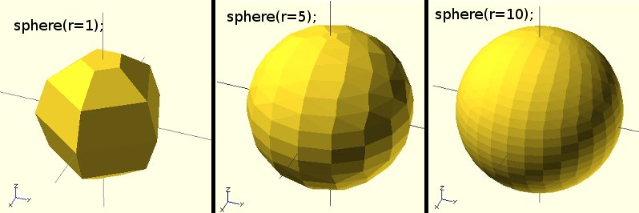

Creates a sphere at the origin of the coordinate system. The r argument name is optional. To use d instead of r, d must be named.
Parameters
default values: sphere(); yields: sphere($fn = 0, $fa = 12, $fs = 2, r = 1);
Usage Examples
sphere(r = 1); sphere(r = 5); sphere(r = 10); sphere(d = 2); sphere(d = 10); sphere(d = 20);
// this creates a high resolution sphere with a 2mm radius sphere(2, $fn=100);
// also creates a 2mm high resolution sphere but this one // does not have as many small triangles on the poles of the sphere sphere(2, $fa=5, $fs=0.1);

Created with the Personal Edition of HelpNDoc: Easily create EPub books